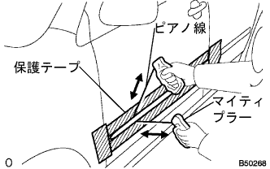

Outside Moulding Removal |
| 1. Remove Front Door Outside Moulding LH |
 |
Apply protective tape around the moulding.
Heat the moulding using an infrared lamp or equivalent.
Set piano wire in the Mighty Puller.
Cut the double-sided tape adhesive with the piano wire and remove the front door outside moulding.
| 2. Remove Rear Door Outside Moulding LH |
Remove the rear door outside moulding LH in the same way as the front door outside moulding LH.